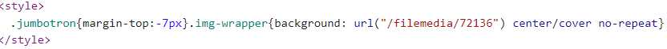

Hier een voorbeeld van een stijlblok op de website van Vives:
4 linken naar aparte stijlbestanden:
Er worden inline stijlen gebruik. Voorbeeld:
Er wordt ook gebruik gemaakt van stijlblokken.
Hier ook terug 4 linken naar aparte stijlbestanden.
Een voorbeeld van een stijlblok uit de website:
3 linken naar externe stijlbestanden.